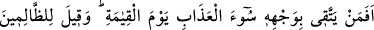
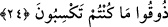

da cevaben: “Allah’ın rahmetinden kovulmuş şeytandan Allah’a sığınırım!’ dedi.
Rivâyet edildiğine göre İbn Ömer (r.a.) yere yığılmış Iraklı bir adama rastladı. “Bu
adamın nesi var?” diye sordu. Oradakiler: “Bu zat kendisine Kur’an okunduğu ya da
Allah’ın anıldığını duyduğu zaman hep düşüp yere yığılır.” dediler. Bunun üzerine İbn
Ömer (r.a.) şöyle dedi: “Elbet biz de Allah’tan korkarız, ama böyle yere yığılmayız.”
Yine İbn Ömer (r.a.): “Şeytan bazılarının içine giriyor. Bu, Hz. Peygamber (a.s.)’ın
ashabının yaptığı bir davranış değil” demiştir. Keşfü’l-esrâr, el-Meâlim, el-Vasît, el-
Kevâşî ve diğer tefsirlerde böyle geçmektedir.
Fakir (Bursevî) der ki: Şüphe yok ki bütün bu tenkit ve yaralayıcı ifâdeler riyâkârlar,
iddiâcılar ve kendisini zaptetmeye gücü yetenler hakkındadır. Nitekim Hz. Peygamber
(a.s.): “Kim âşık olup da iffetli davranır ve bunu gizler, sonra da ölürse şehid olarak
ölmüş olur.”[103] hadîsiyle buna işâret etmiştir. Çünkü hâline gâlip gelen kimse için
edebe uygun olan, kendisine izin verilmemiş bir harekette bulunmamaktır. Hal kendisine
gâlip gelen, işinde samimi olup sahtekârlık yapmayan kimse, kendisinden kalem
(sorumluluk) düşen ve ne hareket yaparsa yapsın onda mâzur olan deli gibi olur. Seyr ü
sülûke yeni başlamış kişilerin ve yolu yarılamış olanların hâli ile işin sonuna gelmiş
olanların hâli bir değildir. Çünkü nihâyet ehlinin muktedir olduğu bir şeye, onun
aşağısında bulunanlar muktedir olamaz. Ashab (r.anhüm) ve onlardan sonra gelip de
onların hükmünde olanlar, temkînlerinin güçlü olması sebebiyle, bilakis temkinlerinde
telvînlerinin şiddetinden her hâl ve makamda edebe riâyet ederler. Dolayısıyla böyle
bir temkîne sâhip olmayan kimseler onlara kıyas edilmez. Telvîn ehlinden niceleri
vardır ki temkîn ehlinin yapmadığı şeyleri yapar. Ancak o, hâle mağlûb ve irâdesi
elinden alınmış olduğu için mâzurdur.
Şu halde akıllı olan Hakk’ın yolunda riyâsız ve iddiâsız olarak çalışsın. Fetvâ ve
takvâ ile ilgili her hususta edebe sarılsın. Kalbi kaplayıp paslandıran zâhirini ve
bâtınını ayıp ve kusurlardan, kalbini kirletip perdeleyecek şeylerden korusun.
24. Kıyamet gününde yüzünü azâbın şiddetinden korumaya çalışan kimse
(kendini ondan emin kılan gibi) midir? Zâlimlere “Kazandığınızı tadın!” denilir.
“Kıyamet gününde yüzünü azâbın şiddetinden” yâni kötü ve şiddetli azabdan,
Kâşifî’nin Farsça tefsîrinde geçtiği üzere ateşin alevinden, yalınından, istenmedik
durumlardan ve korktuklarından korunduğu eli boynuna bağlı olduğu halde “korumaya
çalışan kimse (kendini ondan emin kılan gibi) midir?” hiçbir istenmedik durum başına
gelmeyecek ve hiçbir durumda korunmaya ihtiyaç duymayacak olan emniyet içindeki bir